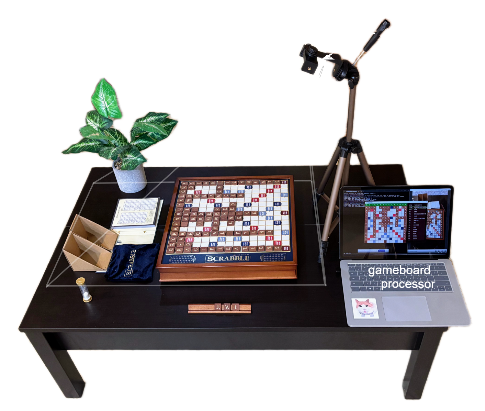

A Comprehensive AI-powered Scrabble Scanner/Solver
by Quan Yuan, feat. Rick and Morty

The current board state is readily scanned via screenshots. The chronology of the gameboard processing is: corner detection → tile recognition → solution. One popup window is generated for each step. Since the computer-vision models achieve ~97–99% accuracy, some human supervision is required.